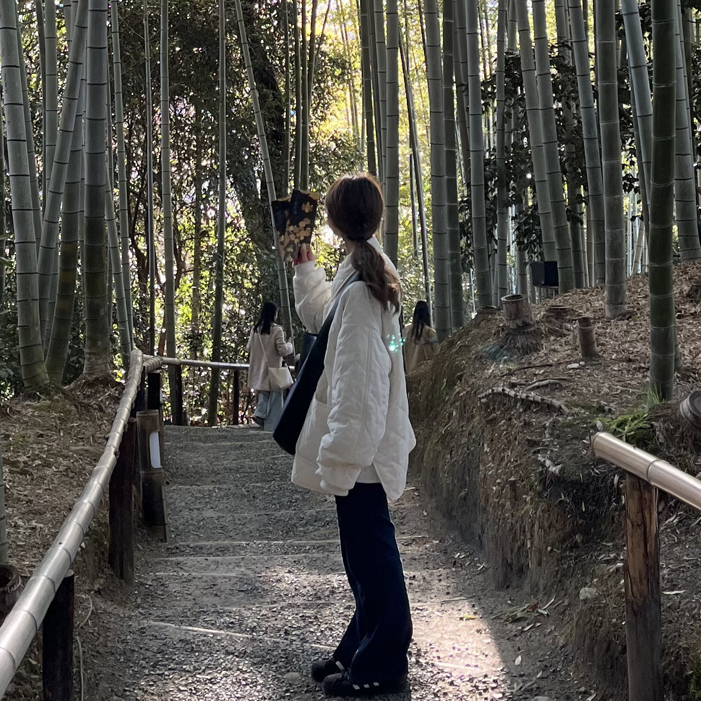
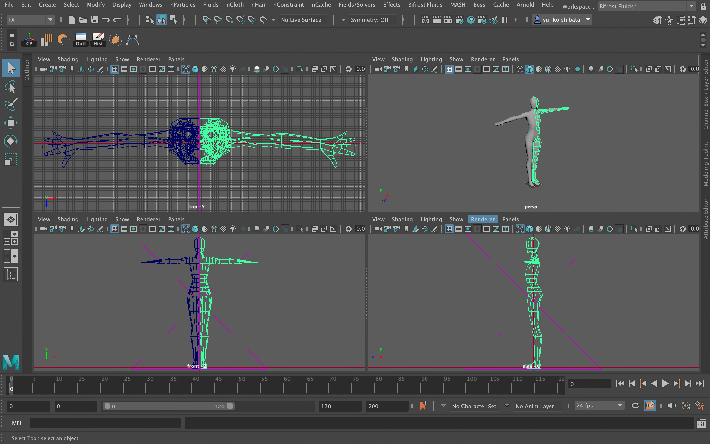

YURIKO SHIBATA
愛知工業大学 情報科学科 メディア情報専攻
MY PORTFOLIO SITE
自己紹介
| 在住 | 三重県鈴鹿市 |
|---|---|
| 連絡先 | 080-5829-1504 yuringo.shibarin@ezweb.ne.jp |
| 経歴 | 「東京ゲームショウ」,「ゲームマーケット」 作品提出 「WINF」,「情報処理学会DCC研究会」 学会発表 「ASSETS 2023 SIGGRAPH」 に作品投稿 株式会社CBCテレビ(Dテック)アルバイト |
| 趣味 | 映画鑑賞(特に洋画が好きです) ハンドボール(地元の体育館で友人と試合に参加します) ドライブ(少し遠くのおしゃれなカフェに行きます) |
| 性格 | 「変なところで真面目」自分の弱みでもあり、様々な強みにつながる根本的な自分の性格 |
| 将来の自分 | 最新の情報や様々なコンテンツに敏感であり続けたい |



自己PR
私の長所は、タスクや学習において目的や意味を理解しようとする性格です。
クッキー作りが好きなのですが、バターを電子レンジで液体にしてしまうとクッキーは石のように固く仕上がります。「バターを常温で溶かす」理由は、サクサクとした軽い食感になるからです。一つ一つの作業の意味を知ることで質の高い行動ができると気づきました。
この特性はプログラミングでも発揮され、コードの挙動を理解していることで、友人のエラーの原因を解析しアドバイスすることができました。
この長所を生かし、職場で与えられたタスクの目的を把握し、臨機応変に質の高い対応ができる人材として貢献します。
私の長所は、一つのことを極める責任感です。
中高の団体スポーツで自分のミスによる失敗を何度も経験し、責任感が培われました。大学では作品の学会発表で高評価を得て、この責任感から次の仕事も任されるなど、多くのチャレンジをする機会を得ました。
今後もこの強みを活かし、信頼され、様々なことへチャレンジさせられる人材を目指します。


- 